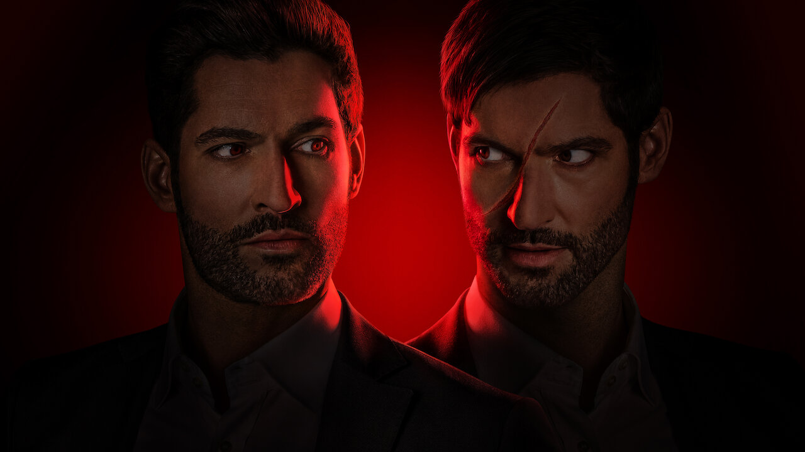

Resumo da série Lúcifer para você que é fã número 1
Lucifer é uma série de fantasia e investigação policial com elementos cômicos e sobrenaturais, baseada nos quadrinhos do selo Vertigo (uma divisão da DC Comics).
A série gira em torno de Lucifer Morningstar (interpretado por Tom Ellis), o Diabo em pessoa, que renuncia o seu trono no Inferno para tirar umas férias na cidade de Los Angeles, onde administra sua própria boate (a “Lux”) e se torna consultor da polícia.
Com seu senso de humor peculiar e total desinibição, Lucifer passa a trabalhar ao lado da detetive Chloe Decker (papel de Lauren German) na investigação de homicídios, usando seu poderes para arrancar as confissões dos desejos mais obscuros dos suspeitos e, quando possível, punir os responsáveis.
O elenco conta também com Lesley-Ann Brandt como Maze, um demônio feroz que toma a forma humana de uma mulher e que é a melhor amiga de Lucifer; Kevin Alejandro como Dan, ex-marido de Chloe e um detetive de homicídios da LAPD bastante desconfiado de Lucifer; D.B. Woodside como Amenadiel, anjo enviado para Los Angeles para convencer Lucifer a voltar para o Inferno; e Rachael Harris como a Dra. Linda, terapeuta de Lucifer.
A série é uma produção da Warner Bros. TV, DC Comics e Jerry Bruckheimer Television, exibida originalmente pelo canal FOX nos Estados Unidos por três temporadas, mas cancelada devido à baixa audiência. Lucifer foi resgatada pela Netflix, ganhando novos episódios pela plataforma de streaming.
Fonte:TecMundo

LÚCIFER MORNINGSTAR: 12 CURIOSIDADES SOBRE O PERSONAGEM
Origem
Antes de tudo ser criado, no vazio além de todas as criações, o Monitor Primal, criou dois irmãos infundidos com poder quase ilimitado, um deles era Miguel Demiurgos, e o outro era Samael, mais tarde chamado de Lúcifer Morningstar.
Depois que ambos ganharam vida, o Senhor (Monitor Primal) os guiou e os instruiu a respeito de como usar seus poderes. Em seguida, eles criaram algo que todos conhecemos como o Multiverso da DC Comics.
O que significa Lúcifer Morningstar?
Lúcifer significa Portador da Luz, já Morningstar significa estrela da manhã ou estrela do alvorecer, se você quiser deixar o nome mais poético.
Ambos os nomes emprestam da conotação bíblica do personagem, que foi expulso do paraíso ao inferno, trazendo consigo conhecimentos que partilharia com os humanos para se rebelarem contra a vontade do Criador.
Antes de tudo, é preciso elucidar a origem bíblica do personagem da DC. Embora ele tenha uma mitologia própria nas HQs/série, sua principal inspiração é, logicamente, o diabo bíblico, personagem já manjado de qualquer um que tenha se deparado com conceitos cristãos.
.jpeg)